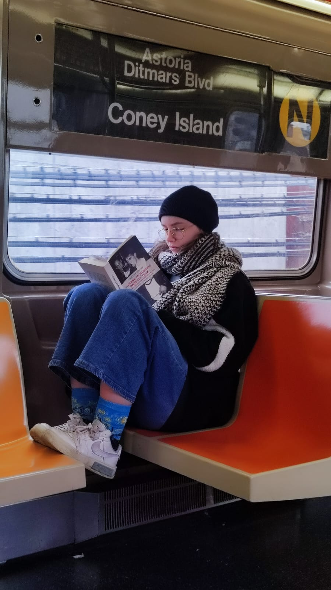

A propos de moi
Bonjour ! Je m'appelle Maëlys Barreteau, passionnée par la culture sous toutes ses formes. À travers ce portfolio, je souhaite partager mes expériences, mes créations ou encore mes centres d'intérêt avec vous.
Si vous êtes sur cette page, c'est que vous souhaitez en savoir un peu plus sur moi. Je suis étudiante en N3 Etudes Culturelles, Parcours Tourisme, Culture et Territoires. Je cherche à intégrer un master Direction de projets et établissements culturels, parcours Action Culturelle et Artistique.
Si j'ai choisi ce master, c'est parce que je souhaite ouvrir ma propre salle de concert. Passionnée de musique et particulièrement de la culture rap depuis mon plus jeune âge, je souhaite créer un lieu accessible à tous, qui mette en avant des artistes émergents et locaux, tout en proposant une programmation variée. Je souhaite mettre en oeuvre des actions de médiation culturelle autour du monde hip hop : dj-ing, danse, graff et surtout la musique urbaine.
Active dans le milieu assocative, forte d'un engagement dans trois associations différentes, je défends l'importance de ce monde qui, pour moi, permet à la culture de vivre. J'ai mis les pieds dans cet univers pendant mon stage au Lieu-Dit, une salle d'expérimentation culturelle à Clermont-Ferrand. J'y ai découvert un monde passionnant, fait de partage et de découvertes.
Je cherche constamment à apprendre, à multiplier les expériences et à m'enrichir culturellement. Ce portfolio est le reflet de cette quête constante de savoir et de passion pour la culture.